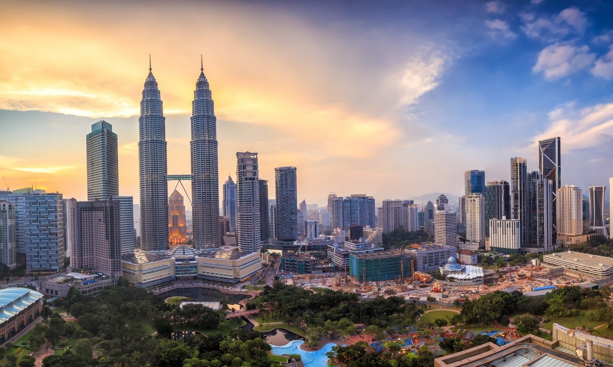
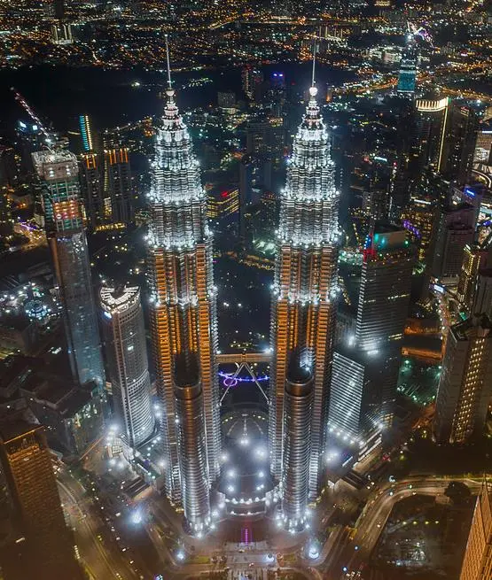
Below are some interesting facts about the Petronas Towers:

Standing at 452 meters, Petronas Towers broke the record of 442 meters held by Sears Tower in Chicago, which had been holding the title of World's Tallest Building for 25 years since 1974. The twin towers are topped by two spires, or known as pinnacles, a common feature of Islamic architecture. The highest occupied floor is 88th floor at 375 meters high.
The twin towers remained the tallest building in the world for 6 years, until in 2004 when Taipei 101 surpassed them. However as of today they are still the tallest twin towers in the world, and may remain that for at least another 5 years or 10 years, or even longer, no one knows when they will be surpassed by other structures, as currently there's still no a proposal for higher twin towers proposed and approved, let alone being built. Dubai used to proposed a project that aimed to become the tallest twin towers in the world, but that proposal had been replaced by the Dubai Creek Tower, which is designed to be built to 1300 meters by 2020.
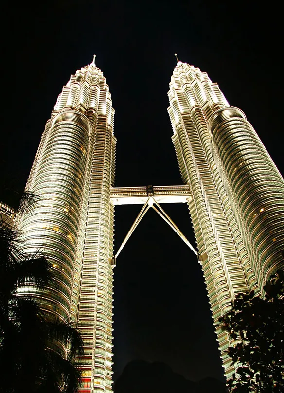
And there's an observation deck occupying the 86th floor of Tower Two. The bottom part of Petronas Towers is occupied by a large shopping mall.
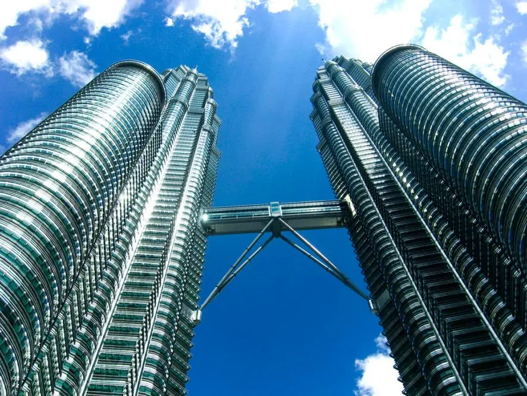
A double-deck Sky Bridge is connecting the two towers on the 41st and 42nd floors, the skybridge is 58 meters long, at 170 meters high from the ground, it is considered the highest two-story skybridge in the world.
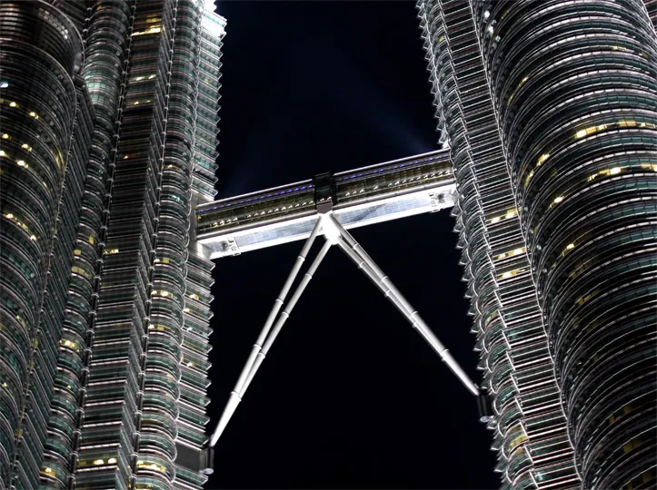
The skybridge is designed as a safety device, in cases of some events like a fire or other emergency occurs on one tower, the tenants in that tower can evacuate to the other tower by crossing the Sky Bridge.
Aside from the Sky Bridge, the 86th floor of Tower Two also holds an observation deck, visitors can access the observation deck from the Sky Bridge by taking another elevator. From there visitors can see the aerial view of the Tower One of the Twin Towers, as well as the most parts of the city of Kuala Lumpur.
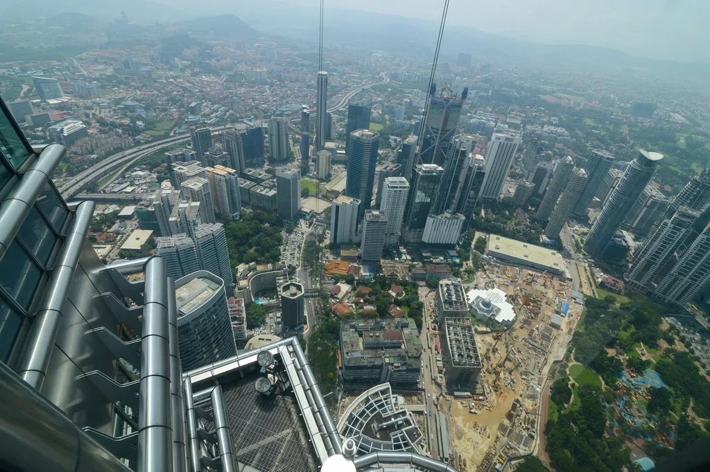
The scenery seen from the observation deck on Petronas Towers
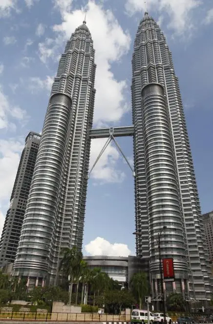
Petronas Twin Towers were designed by Argentina-American architect Cesar Pelli, traditional Islamic arts inspired him to design the towers for Malaysia, a country in which Islam is the major religion. The shape of cross section of each towers is composed of two crossing squares that overlapped on each other, and each of eight intersection point of two squares is surrounded by a small circle, making the curtail walls of the towers being mixed with round sections and angles.
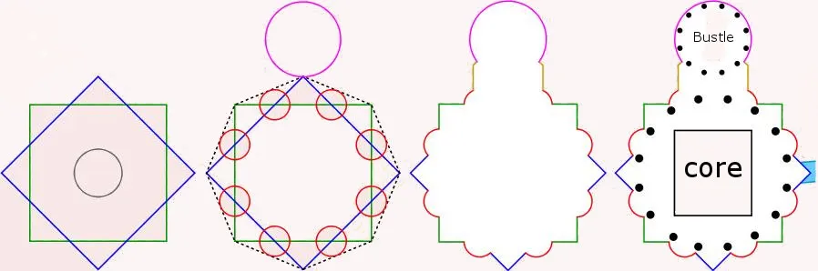
This unique design is based on a Muslim symbol which known as Rub el Hizb, the symbol can be found on many emblems and flags of Islamic countries.
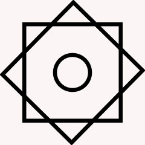
The facade is composed of both steel and glass, resembling the motifs found in Islamic art. The spires or pinnacles found on the top of both towers are also a notable feature of Islamic buildings.
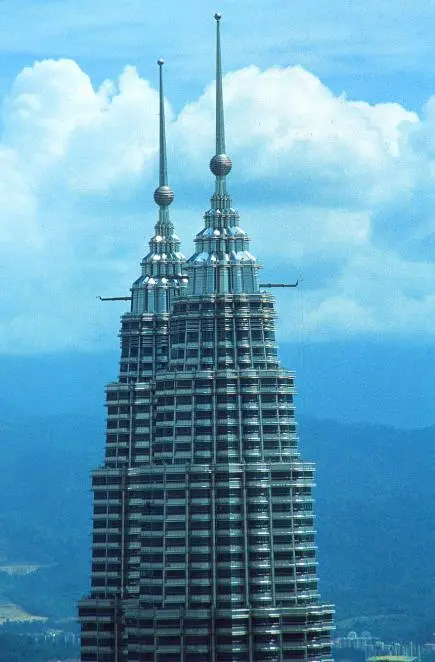
One of the best known films that have the twin towers prominently featured is 1999 film Entrapment, numerous scenes is filmed at the towers, with the climax set on the Sky Bridge.
A slightly modified version of Petronas Towers is featured in The South Korea film The Tower, the twin towers in the film share many similarities with Petronas Towers, including the cladding, the color, and that iconic Sky Bridge. In the film a fire broke out on a tower of the twin towers, even the Sky Bridge is broken when visitors and tenants were trying to cross the bridge.
Other films that have Petronas Towers featured include Bollywood film Don, Chinese action film Viral Factor (In Chinese: 逆战), Hollywood science fiction film Independence Day 2 and many more. In Viral Factor, the aerial views of Petronas Towers is prominently shown when a chopper hovers over an area in proximity of the twin towers. In the film Independence 2, Petronas towers were thrown to the River Thames by aliens, along with them the Burj Khalifa is also thrown to the river.
The towers grew higher rapidly with an average speed of one floor every 4 days, they were finished in 1998 as planned.
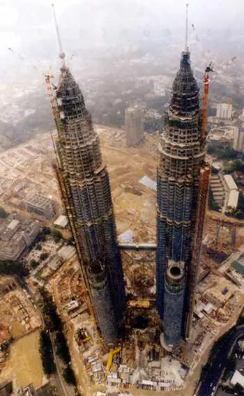
It was reported that the cost on the construction was 1.6 billion dollars by that time.
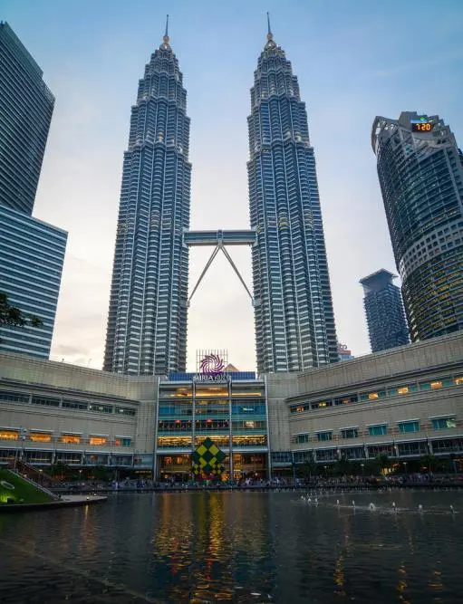
The mall is one of the largest shopping malls in Kuala Lumpur, spanning 140,000 square meters, it features stores of many international luxury brands as well as many affordable fashion brands. Apart from these, many other attractions can be found in the mall, including an art gallery, a theater for philharmonic orchestra, an underwater aquarium and even a science center.
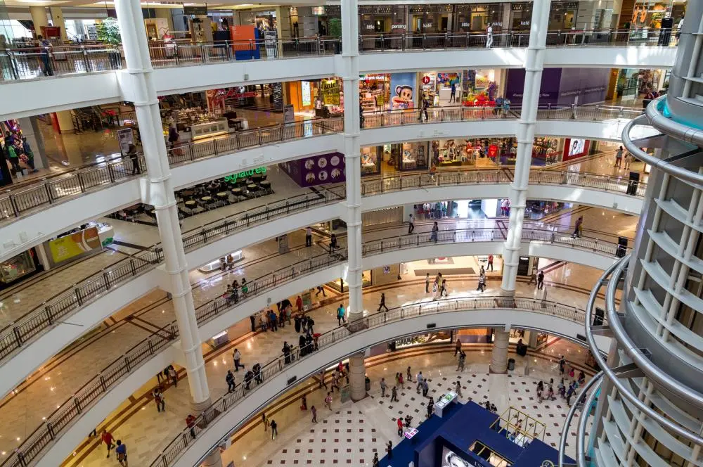
10 Facts about Petronas Towers
Petronas Towers are the twin skyscrapers in Kuala Lumpur, they are the tallest buildings in Malaysia, and were widely known as the World's Tallest Buildings from 1998 to 2004.1. The Twin Towers were once the World's Tallest Buildings
When Petronas Towers were completed in 1998, they were declared by CTBUH as the official World's Tallest Buildings.
Standing at 452 meters, Petronas Towers broke the record of 442 meters held by Sears Tower in Chicago, which had been holding the title of World's Tallest Building for 25 years since 1974. The twin towers are topped by two spires, or known as pinnacles, a common feature of Islamic architecture. The highest occupied floor is 88th floor at 375 meters high.
The twin towers remained the tallest building in the world for 6 years, until in 2004 when Taipei 101 surpassed them. However as of today they are still the tallest twin towers in the world, and may remain that for at least another 5 years or 10 years, or even longer, no one knows when they will be surpassed by other structures, as currently there's still no a proposal for higher twin towers proposed and approved, let alone being built. Dubai used to proposed a project that aimed to become the tallest twin towers in the world, but that proposal had been replaced by the Dubai Creek Tower, which is designed to be built to 1300 meters by 2020.
2. The Name Petronas Towers
There's no word Petronas in English, and it's not the exact name of a company. The word Petronas is short for the words "Petroliam Nasional", which is the name of the Malaysian national petroleum company, the Twin Tower is named after Petroliam Nasional Company, as the company own the towers, and the Tower One is fully occupied by the company as its headquarters.3. The functions of the twin towers
While the Tower One is occupied by Petroliam Nasional themselves, the Tower Two is rented out by them to various international companies, including many top notched companies like Microsoft, Huawei Technologies, IBM, Bloomberg, Reuters, etc..And there's an observation deck occupying the 86th floor of Tower Two. The bottom part of Petronas Towers is occupied by a large shopping mall.
4. The iconic Sky Bridge
A double-deck Sky Bridge is connecting the two towers on the 41st and 42nd floors, the skybridge is 58 meters long, at 170 meters high from the ground, it is considered the highest two-story skybridge in the world.
The skybridge is designed as a safety device, in cases of some events like a fire or other emergency occurs on one tower, the tenants in that tower can evacuate to the other tower by crossing the Sky Bridge.
5. They are one of the most popular tourist destinations in Kuala Lumpur
The Sky Bridge between two towers is opened to public for sightseeing, visitors can access to the bridge to enjoy the close views of the city from above at a height of 170 meters. In the past, visiting the Sky Bridge was free of charge, since 2010 the owner of the towers started to sell the tickets of the observatory.Aside from the Sky Bridge, the 86th floor of Tower Two also holds an observation deck, visitors can access the observation deck from the Sky Bridge by taking another elevator. From there visitors can see the aerial view of the Tower One of the Twin Towers, as well as the most parts of the city of Kuala Lumpur.
The scenery seen from the observation deck on Petronas Towers
6. About the shape and design
Petronas Twin Towers were designed by Argentina-American architect Cesar Pelli, traditional Islamic arts inspired him to design the towers for Malaysia, a country in which Islam is the major religion. The shape of cross section of each towers is composed of two crossing squares that overlapped on each other, and each of eight intersection point of two squares is surrounded by a small circle, making the curtail walls of the towers being mixed with round sections and angles.
This unique design is based on a Muslim symbol which known as Rub el Hizb, the symbol can be found on many emblems and flags of Islamic countries.
The facade is composed of both steel and glass, resembling the motifs found in Islamic art. The spires or pinnacles found on the top of both towers are also a notable feature of Islamic buildings.
7. The Twin Towers have been shown in many films
As one of the most renowned landmarks of Malaysia, the Twin Towers have been featured in many international films.One of the best known films that have the twin towers prominently featured is 1999 film Entrapment, numerous scenes is filmed at the towers, with the climax set on the Sky Bridge.
A slightly modified version of Petronas Towers is featured in The South Korea film The Tower, the twin towers in the film share many similarities with Petronas Towers, including the cladding, the color, and that iconic Sky Bridge. In the film a fire broke out on a tower of the twin towers, even the Sky Bridge is broken when visitors and tenants were trying to cross the bridge.
Other films that have Petronas Towers featured include Bollywood film Don, Chinese action film Viral Factor (In Chinese: 逆战), Hollywood science fiction film Independence Day 2 and many more. In Viral Factor, the aerial views of Petronas Towers is prominently shown when a chopper hovers over an area in proximity of the twin towers. In the film Independence 2, Petronas towers were thrown to the River Thames by aliens, along with them the Burj Khalifa is also thrown to the river.
8. The Twin Towers were built very fast
Petronas Twin Towers was proposed in 1992, the construction commenced two years later in 1994, Malaysian government specified the towers need to be completed in 6 years, for this reason there were two construction consortium hired to construct the two towers in the same time, one for each tower, the Tower One was built by Hazama Corporation, a Japanese company, the Tower Two was built by Samsung C&T, which also built some other famous skyscrapers like Taipei 101 and Burj Khalifa in the later.The towers grew higher rapidly with an average speed of one floor every 4 days, they were finished in 1998 as planned.
9. The Suria KLCC Mall
A large shopping mall named Suria KLCC occupies the podium of the towers.The mall is one of the largest shopping malls in Kuala Lumpur, spanning 140,000 square meters, it features stores of many international luxury brands as well as many affordable fashion brands. Apart from these, many other attractions can be found in the mall, including an art gallery, a theater for philharmonic orchestra, an underwater aquarium and even a science center.